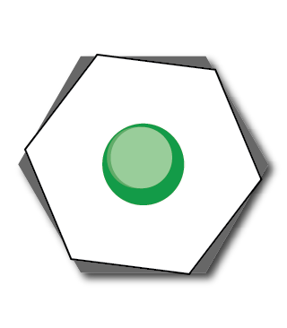

Sponsors
Full sponsors
Bela is a maker platform for creating beautiful interaction with sensors and sound. Designed for artists, musicians, researchers and makers, Bela brings the power of ultra-low latency interaction to your digital audio projects. Find out more here.
Ableton was founded in 1999 and released the first version of Live in 2001. Our products are used by a community of dedicated musicians, sound designers, and artists from across the world. We make Live, Push and Link — unique software and hardware for music creation and performance. With these products, our community of users creates amazing things.
Technical sponsor

Collab-Hub is a tool that helps artists, musicians, circuit-benders, game developers, and creative coders share data effortlessly between remote systems and collaborators (or on the same local network).